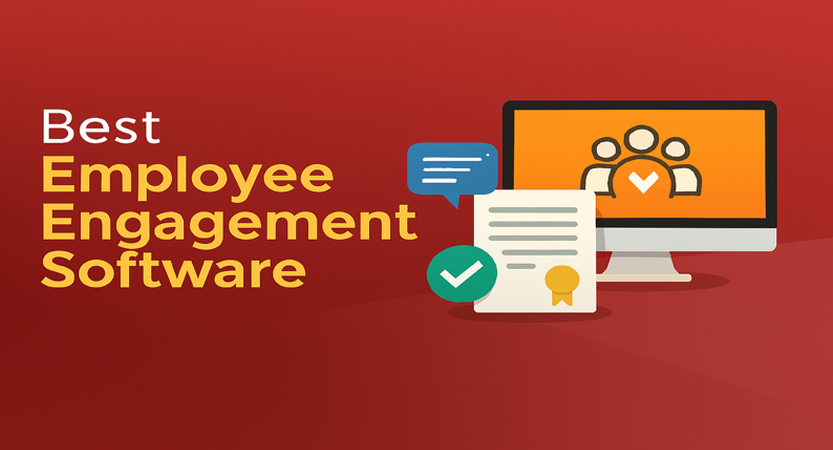
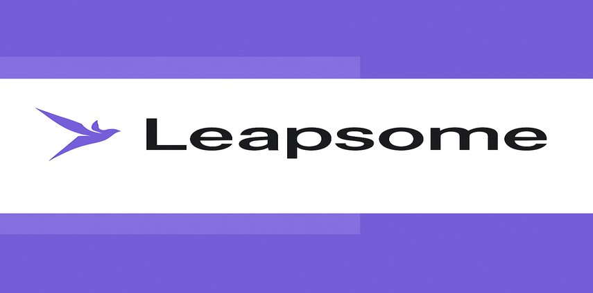
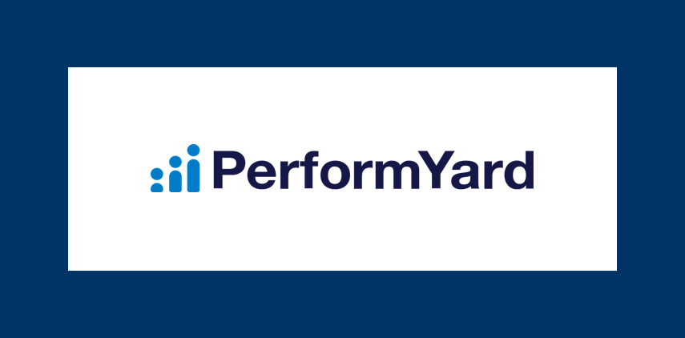
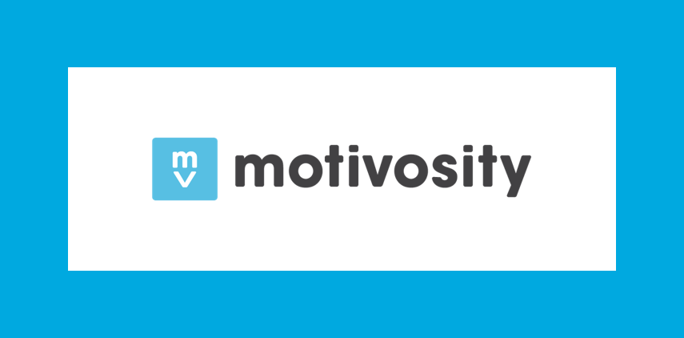

Best Employee Engagement Software in 2025
James McGill | Updated on April 1st 2025Privacy and Technology Consultant In a hurry? Here’s the top Employee Engagement Software for 2025:
Staying connected at work used to mean occasional check-ins, annual performance reviews, and guessing how your team was really feeling. But in 2025, employee engagement software is changing the game. With real-time feedback, recognition tools, and easy-to-use surveys, you can now understand and improve team morale—before problems arise.
Whether you manage a remote team, run a fast-growing startup, or lead a large organization, these platforms help you build a culture where people feel heard, supported, and motivated to do their best work.
But First, What Exactly Is Employee Engagement Software?
Employee engagement software is a modern solution for building stronger teams. It gives companies the tools to check in with employees more frequently and more meaningfully—through pulse surveys, feedback forms, peer-to-peer recognition, performance tracking, and more. It’s like having a real-time window into team sentiment and culture.
Instead of waiting for annual reviews or relying on gut instinct, you can spot issues early, celebrate wins more often, and create a workplace where people actually want to stay. From tracking goals to sending kudos, these tools help HR and managers make smarter, people-first decisions.
That said, not all platforms are the same. Some are clunky, others lack meaningful insights or fail to integrate with your existing systems. Choosing the right employee engagement software can be the difference between a team that’s simply checking boxes—and one that’s truly thriving.
If you're ready to foster a more engaged, motivated, and loyal workforce, you’re in the right place. We’ve reviewed the top employee engagement platforms for 2025—so you can skip the guesswork and choose a tool that helps your team grow. Let’s dive in!
An overview of the best for 2025:
- 🥇 1. Leapsome — Leapsome is an all-in-one people enablement platform designed to boost employee engagement, performance, and development. It combines tools for goal tracking, performance reviews, feedback, learning, and surveys—all in one intuitive interface. Whether you're managing a small team or a global workforce, Leapsome helps you build a culture of continuous improvement and alignment.
- 🥈 2. PerformYard — PerformYard is a streamlined performance management platform built to simplify reviews, goal tracking, and employee feedback. It offers flexible workflows tailored to your organization's needs, making it easy to run annual reviews, continuous feedback, and 360 evaluations. Designed for HR teams and managers, PerformYard helps align performance with business goals while saving time and increasing transparency.
- 🥉 3. Motivosity — Motivosity is an employee engagement platform that focuses on recognition, rewards, and building stronger workplace connections. It makes it easy for teams to celebrate wins, give peer-to-peer shoutouts, and foster a culture of appreciation. With built-in tools for feedback, leadership development, and performance incentives, Motivosity helps create a workplace where people feel seen, valued, and motivated.
- Frequently Asked Questions about (FAQ).
Why Use Employee Engagement Software?
Employee engagement tools are transforming how companies connect with their teams—especially in an era where flexibility, wellbeing, and communication matter more than ever. Here’s why more businesses are making the switch:
- Boost Morale and Motivation: Say goodbye to quiet quitting and disengagement. With regular recognition, meaningful feedback, and clear communication, employees feel seen and appreciated. This emotional boost leads to stronger performance, better collaboration, and a more energized team culture.
- Reduce Turnover: Losing top talent is costly—and often preventable. Engagement platforms help you monitor sentiment and spot red flags early. When employees feel heard and supported, they’re far more likely to stay loyal and invested in the company’s success.
- Improve Communication: From pulse surveys to team announcements, employee engagement tools improve how information flows across your organization. Instead of relying on scattered emails or outdated intranet posts, you can centralize updates and foster real, two-way communication.
- Real-Time Feedback: Why wait for an annual review to find out something went wrong? Continuous feedback empowers managers and employees to address issues and celebrate wins in the moment—building a culture of agility, growth, and transparency.
- Custom Surveys & Insights: No two teams are exactly alike. Customizable surveys let you ask the right questions for your culture, goals, or challenges—and turn the answers into actionable insights that shape everything from HR policies to day-to-day workflows.
- Recognition That Actually Matters: Everyone wants to feel appreciated. Built-in recognition features make it easy to call out great work—whether that’s a public shout-out, a digital badge, or a milestone celebration. Recognition becomes part of the everyday culture, not just a quarterly event.
- Easy to Use (Even for Non-HR Folks): Modern engagement platforms are built for everyone—not just HR pros. With intuitive dashboards, mobile-friendly features, and plug-and-play integrations, these tools fit seamlessly into your team’s existing workflows without adding extra complexity.
Employee engagement software isn’t just for large corporations or tech giants—it’s for any organization that cares about people and wants to build a better workplace.
Having explored the benefits of using eSIMs, let’s take a look at the top 3 providers we recommend for global travel in 2025!
1. Leapsome — Top all-in-one platform for wellness, rewards, and recognition

Leapsome is a well-rounded platform that brings performance management, employee engagement, and development into one streamlined solution. Its clean, intuitive interface makes it easy for both managers and employees to navigate goal setting, peer reviews, and progress tracking. We found the process of creating and running performance cycles especially smooth, and the ability to distribute learning content directly through the platform encourages a culture of growth and accountability.
Beyond its usability, Leapsome stands out for its rich feature set. Customizable engagement surveys, real-time feedback tools, and OKR tracking are all built into the system, giving HR teams a dynamic way to stay in tune with employee sentiment and performance. We also appreciated how well Leapsome integrates with tools like Slack, Microsoft Teams, and popular HRIS platforms—making it easier to embed into daily workflows without disruption.
Leapsome is a powerful choice for companies looking to centralize and modernize their people operations. It’s flexible, user-friendly, and packed with features that support ongoing development and engagement. For teams focused on transparency, feedback, and continuous improvement, Leapsome delivers serious value.
Get Leapsome - Drive performance & engagement!
2. PerformYard — Best for peer-to-peer recognition

PerformYard offers a comprehensive suite of tools designed to streamline performance management processes within organizations. Its user-friendly interface simplifies goal setting, performance reviews, and continuous feedback, making it accessible for both employees and managers. The platform's centralized dashboard provides a clear overview of performance metrics, facilitating effective tracking and management.
One of the standout features of PerformYard is its customizable workflows, which allow organizations to tailor performance management processes to their specific needs. The platform supports 360-degree feedback, enabling comprehensive evaluations from peers, subordinates, and supervisors. Additionally, PerformYard integrates seamlessly with existing HR systems and communication tools, enhancing its versatility and ease of adoption.
PerformYard is a robust performance management solution that combines ease of use with a rich feature set. Its customizable workflows, comprehensive feedback mechanisms, and integration capabilities make it a valuable asset for organizations aiming to enhance their performance management practices and foster a culture of continuous improvement..
Get PerformYard - Drive performance & engagement!
3. Motivosity — Ideal for budget-conscious, growing teams

Motivosity is a vibrant platform built around one powerful idea: when people feel appreciated, they perform better. The software makes it easy for employees to recognize each other through public shout-outs, personalized messages, and even small monetary rewards. Its social feed-style interface adds a sense of fun and visibility, helping recognition feel genuine rather than forced.
What really sets Motivosity apart is its ability to humanize the workplace. Features like personality profiles, interest tags, and interactive org charts help employees get to know each other beyond job titles—especially helpful for remote or distributed teams. On top of that, its analytics dashboard gives HR leaders insight into recognition trends and engagement levels, helping shape a more connected and inclusive culture.
Motivosity goes beyond just employee rewards—it’s about building relationships and reinforcing a culture of gratitude. If you’re looking for an easy-to-use platform that encourages recognition and strengthens team connections, Motivosity is a compelling choice for companies of all sizes.
Get Motivosity - Drive performance & engagement!
How Did We Choose the Best Employee Engagement Software?
Choosing the right employee engagement software isn’t just about picking the most popular tool—it’s about finding the one that fits your team's unique needs, goals, and structure. Here’s what we considered (and what you should, too) when evaluating the best platforms:
- 1. What Problems Are You Trying to Solve? Start by identifying the challenges you’re currently facing. Are employees feeling disconnected? Is feedback inconsistent or hard to act on? Are you struggling to measure morale or engagement levels across remote teams? Pinpointing these issues will help you prioritize the features that matter most—like recognition tools, real-time surveys, or stronger communication features.
- 2. What Outcomes Do You Want to Achieve? Think about your ideal outcomes. Maybe it’s lowering turnover, improving your eNPS, or simply getting better visibility into how your team is feeling. When you know what success looks like, it becomes much easier to measure whether a platform is doing its job—through metrics like feedback response rates, retention stats, or sentiment analysis.
- 3. Who Will Be Using the Software? Consider everyone who’ll interact with the platform—HR, managers, team leads, and employees. Look for a solution that offers role-based access and a user-friendly interface that works for all levels of the organization. A great engagement tool should be intuitive enough for anyone to use without extra training.
- 4. What’s Your Budget? Most platforms charge per employee per month, so it’s important to estimate your team size now and in the near future. Knowing your budget range will help you filter out tools that don’t align financially and avoid wasting time on demos that are out of reach.
- 5. What Integrations Do You Need? Think about your current tech stack. Will your engagement platform need to work with your HRIS, performance management system, or communication tools like Slack or Microsoft Teams? Choosing a tool with strong integrations—or flexible API options—can save you a lot of headaches later and may even reduce costs by replacing multiple apps with one.
- 6. Will It Work With Your Existing Systems? Technical compatibility is just as important as features. Make sure the platform supports your existing infrastructure, whether that's Google Workspace, Microsoft SharePoint, or mobile-based workflows. And don’t forget about security—look for key features like two-factor authentication and secure user management.
Best Employee Engagement - Frequently Asked Questions
💺 What is employee engagement software?
Employee engagement software is a digital platform designed to help companies improve how they connect with, motivate, and support their employees. It includes tools like surveys, feedback systems, recognition features, and analytics that give leaders real-time insight into employee satisfaction, performance, and overall workplace culture.
💼 Why is employee engagement important?
Engaged employees are more productive, stay longer, and contribute to a healthier company culture. Strong engagement has been linked to higher profitability, lower turnover, better customer satisfaction, and improved team collaboration—making it a crucial investment for businesses of any size.
💽 What are the different kinds of employee engagement solutions?
Employee engagement solutions come in various forms, each focusing on different aspects of the employee experience. Some specialize in feedback and surveys, while others focus on performance management, internal communication, recognition and rewards, or gamification. Many platforms combine several of these features to offer a more complete engagement solution.
👫 Who uses employee engagement software?
Employee engagement software is used across the entire organization—from entry-level employees to executives. HR teams use it to manage feedback, recognition, and performance, while departments like sales, support, and IT use it to improve collaboration, knowledge sharing, and team morale. Whether it’s through surveys, recognition tools, or internal communication features, each team can tailor the software to boost engagement in their own way.
🏢 How does employee engagement software benefit organizations?
It boosts morale, reduces turnover, improves communication, and provides actionable data to HR and leadership teams. With the right platform, you can build a more transparent, inclusive, and responsive workplace culture where employees feel heard and valued.
💰 How much does employee engagement software cost?
Pricing varies by provider but often follows a per-user, per-month model. Some tools offer free versions for small teams, while larger organizations typically pay for advanced features, support, and customization. It's important to evaluate total cost based on your team size and growth plans.
🏪 Can small businesses benefit from employee engagement software?
Absolutely. Many platforms offer affordable or even free plans designed for small teams. These tools can help smaller businesses build a stronger culture, improve communication, and recognize great work without needing a large HR department or budget.
🕴 How do I choose the right employee engagement software?
Start by identifying your engagement challenges and goals. Then, consider your team size, budget, feature requirements, user roles, and integration needs. Look for a platform that aligns with your current systems and is easy for your whole team to adopt and use.
💻 How much does an employee engagement tool cost?
The cost of employee engagement software depends on factors like the provider, feature set, team size, and level of customization. Many platforms charge per user, per month, and pricing can vary widely. It’s a good idea to start with a free trial to explore the features and see if the tool fits your needs before committing to a paid plan.
Transparency and Trust: The aim of this website is to help you find the perfect software for your needs in an easy-to-view comparison list. You can read more about how we review and about our background in the About Us section of this website. Software.fish does not feature all of the software available in the market, we cherry-pick what we consider to be the leaders in each vertical. We try to keep this site updated and fresh, but cannot guarantee the accuracy of the information as well as the prices featured at all times. All prices quoted on this site are based on USD so there could be slight discrepancies due to currency fluctuations. Although the site is free to use, we do earn commissions from the software companies that we have partnered with. If you click on one of our links and then make a purchase, we will get paid by that company. This has an impact on the ranking, score, and order in which the software is presented in our list and elsewhere throughout the site. Software listings on this page DO NOT imply endorsement.